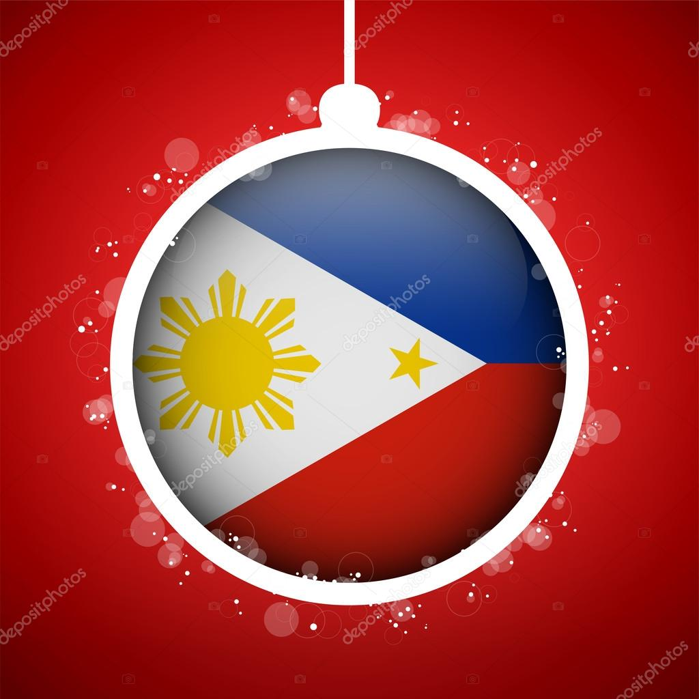

Date: Decmber 25, 2024
Description Christmas Day, on December 25, is one of the most festive Christian holidays in many countries around the world. It celebrates Jesus' birth. It is time for children in many countries around the world to hang their Christmas stockings (or pillow cases), hoping for a present to arrive from Santa Claus on Christmas Day.
 Christmas in the Philippines is one of the most awaited celebrations of the year, known for its length and vibrant traditions. Filipinos begin the Christmas season as early as September, with the "Ber months" filled with holiday songs, decorations, and festive gatherings. The highlight is the "Simbang Gabi," a nine-day series of dawn masses leading up to Christmas Eve, where families celebrate "Noche Buena" – a midnight feast that includes traditional Filipino foods like ham, lechon (roasted pig), queso de bola, and sweet delicacies. Gift-giving, family reunions, and displays of parols (star-shaped lanterns) are central to the celebration. It’s a time of joy, family togetherness, and religious devotion, making Christmas in the Philippines truly special and heartfelt.